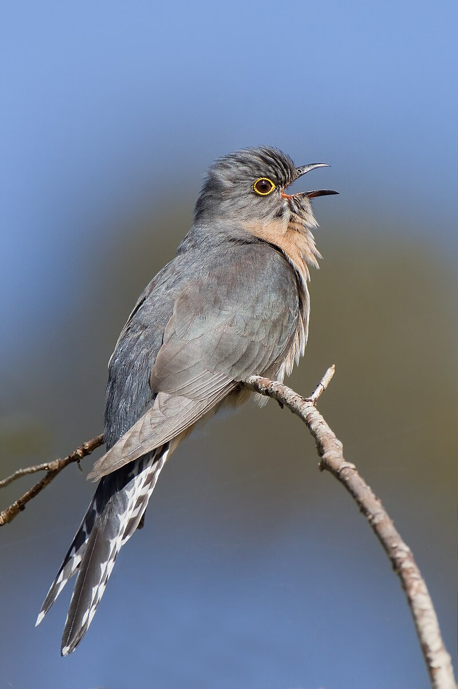

Cuckoo Filtresi
Cuckoo filtresi, bir önceki yazımda ele aldığım Bloom Filtresine alternatif olarak, 2014 yılında geliştirilmiştir. Amacı, Üyelik (membership) sorguları için yapmaktır. Yani bir elemanın bir küme içerisinde muhtemelen olup olmadığını belirlemek için kullanılır. Bloom filtresine benzer olarak, bir elemanın küme içerisinde kesin olarak bulunmadığını belirlerken, yanlış pozitif sonuçlar üretebilir.
Bloom filtresine göre avantajları, kümeden eleman silmeye izin vermesi ve daha yüksek sorgulama performansı sunabilmesidir.

Cuckoo filtresi, temel olarak sabit uzunlukta parmak izleri (fingerprints) ve bu parmak izlerinin saklandığı kovalar (buckets) içerir. Parmak izi, bir elemanın belirli bir hash fonksiyonundan geçirilmesiyle elde edilir ve çıkan sonucun yalnızca önceden belirlenmiş uzunluktaki kısmı alınarak oluşturulur.
Cuckoo filtresinin akışı aşağıdaki gibi özetlenebilir:
- Ekleme (insertion): Kümeye eklenecek her $x$ elemanı için, $p$-bitlik parmak izi ve $i,j$ indeskleri hesaplanır:
$$ i = h_1(x) $$ $$ j = i \oplus h_2(\text{fingerprint}(x)) $$
Eğer $i$ veya $j$ kovasında boş yer varsa, parmak izi oraya yerleştirilir. Eğer her iki kova da dolu ise, fingerprint kovadaki fingerprintlerden birinin yerine yerleştirilir, yerinden edilen parmak izi ise kendi alternatif kovasına yerleştirmeye çalışılır (cuckoo hashing prensibi1). Bu işlem belli bir iterasyon sayısı kadar tekrarlanır; hala yer bulunamazsa filtre dolu kabul edilir.
-
Sorgulama (querying): Eleman için parmak izi ve aday indisler hesaplanır. Parmak izinin aday kovalarda bulunup bulunmadığı kontrol edilir.
-
Silme (deletion): Eleman silinmek istendiğinde ise, elemana ait parmak izinin bulunduğu kovalar taranır ve ilgili parmak izi silinir.
Bir kümeye sık ekleme yapılıyorsa Bloom filtresi daha uygundur, ancak sorgulama işlemlerinde Cuckoo filtresi daha yüksek performans gösterir.
Hedeflenen yanlış pozitif oranı $P_{f_p}$ (false positive rate) ve $b$ kova büyüklüğü için, önerilen minimum parmak izi uzunluğu $p$ aşağıdaki formülle hesaplanabilir:
$$ p = \lceil \log_2\left(\frac{2b}{P_{f_p}}\right) \rceil $$
Bir sonraki yazıda görüşmek üzere.
Kaynaklar
- Cuckoo Filter: Practically Better Than Bloom
- Probabilistic Data Structures and Algorithms for Big Data Applications
- Cuckoo Filter - Redis
-
Guguk kuşları, parazitik bir üreme davranışı sergilerler. Guguk kuşu, yumurtalarını başka kuşların yuvalarına bırakır ve bu kuşlar yumurtayı kendi yumurtası olarak kabul edip kuluçkaya yatarlar. Guguk kuşu yavrusu, diğer yumurtalardan önce çıkarak diğer yavruları yuvadan atar. ↩